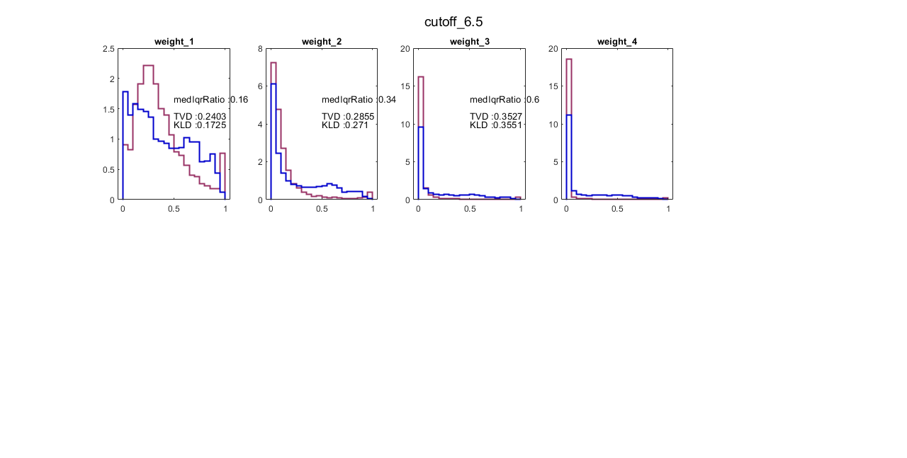
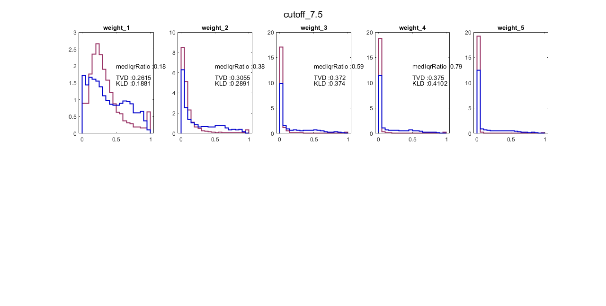
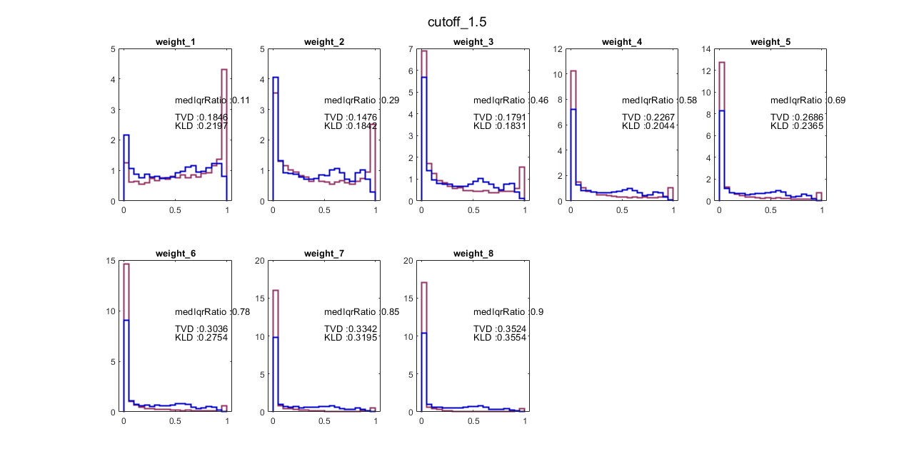
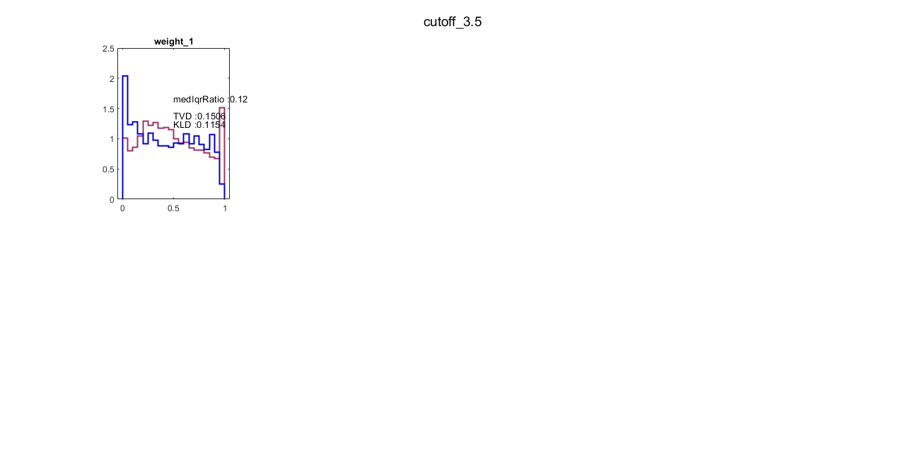
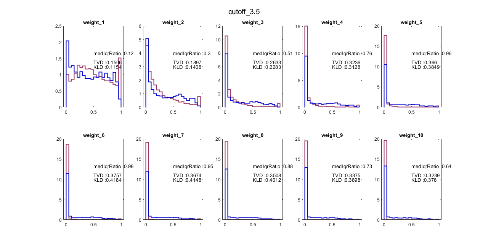
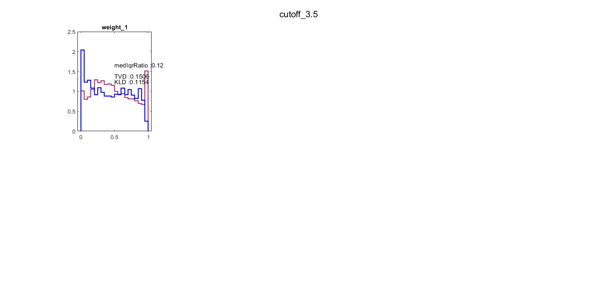
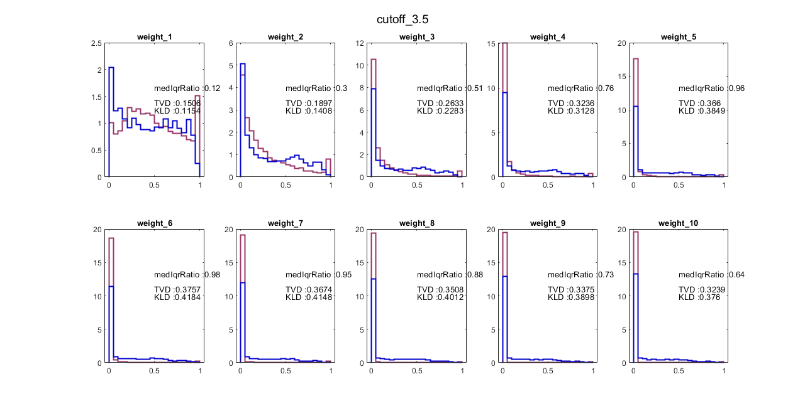
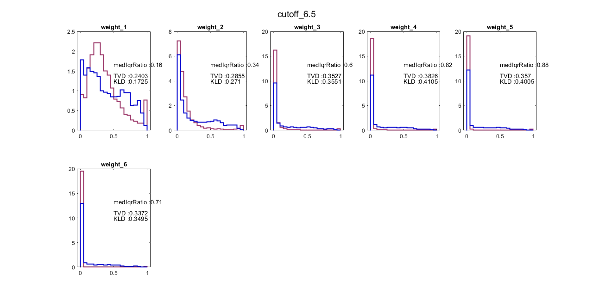
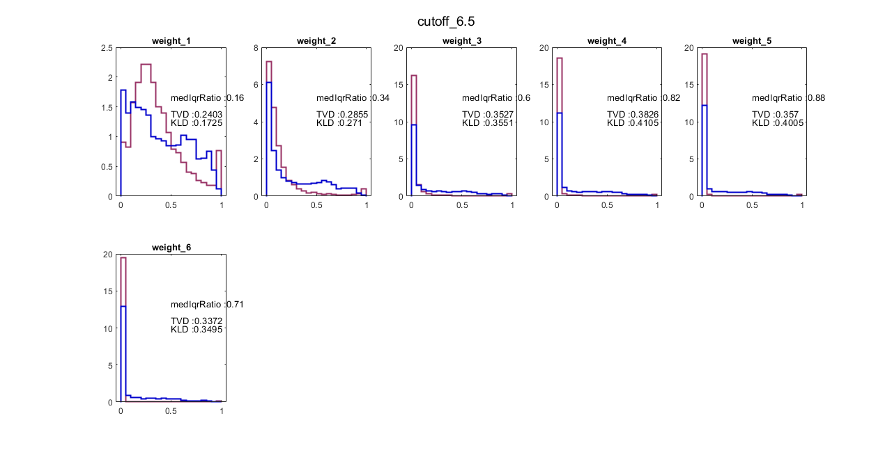
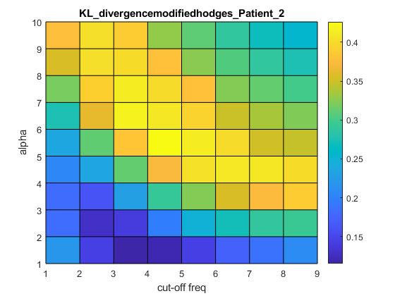

Contents
- Get the parameters
- sessionwise Prob of detection
- All sessions together
- plot the probability distribution of null hypothesis H0;
- Cummulate all zscore for each combination in a array to plot boxplot
- To ensure number of bins and binwidth is same'BinWidth',0.05
- Computing the KL divergence
- Computing the median/IQR ratio of the normalise z-scores
- Computing the Total variance distance
- plot the surface plot of the KL close all
- heat map of the trials
- Finding best parameter
- Choosing parameter that has lesser false positive rate at H0 condition
clc clear all close all addpath 'E:\EMG_detectors\library' Detectors = ["modifiedhodges"];
Get the parameters
mode = "Train"; method = ""; type = ""; SNR = []; paramfuncname = strcat(Detectors(1), '_param'); paramfunc = str2func(paramfuncname); params = paramfunc(mode,type,SNR,Detectors(1),method); combo = 1:numel(params.combo); Params = string(combo); cutoff = params.fc; paramcombo = repmat(Params,1,2); costfactors = [repmat({'E'},1,length(Params)),repmat({'N'},1,length(Params))];
patient = 2; name = strcat('Patient',num2str(patient),'modifiedhodgesPdALLcombo.mat'); MaxSepAllcombo = load(fullfile('E:\EMG_detectors\detectors_review_paper\Probdetection\',name)); % for k = 1:length(NoTrialPatient)
sessionwise Prob of detection
PmoveEMG = MaxSepAllcombo.H1; %MaxSepAllcombo.MaxSepAllcombo(:,1:2:end); PmoveNoise = MaxSepAllcombo.H0; %MaxSepAllcombo.MaxSepAllcombo(:,2:2:end);
All sessions together
PdH1_Allsession = cell2mat(PmoveEMG);
PdH0_Allsession = cell2mat(PmoveNoise);
% %% Plot boxplot of Pd
figure
BoxplotData = [PdH1_Allsession PdH0_Allsession];
boxplot(BoxplotData,{paramcombo,costfactors},'colors',repmat('km',1,2),'factorgap',[7 1],'labelverbosity','minor','BoxStyle','filled');
ylabel('ProbDetection')
title(strcat(Detectors(1),'_Patient_',num2str(patient)),'Interpreter','none')
% % Include only the trials for which there is some EMG activity than noise
% Activetrials = PmoveEMG > PmoveNoise;
fig1 =1;
Zscore = [];
grp = [];
n=1;
plot the probability distribution of null hypothesis H0;
for i=1:length(combo)
n=n+1;
% index = find(Activetrials(:,i) == 1);
Pmovenoise_Log = log(PdH0_Allsession(:,i));
Pmovenoise_Log = Pmovenoise_Log(Pmovenoise_Log ~= 0);
Pmoveemg_Log = log(PdH1_Allsession(:,i));
Pmoveemg_Log = Pmoveemg_Log( Pmoveemg_Log ~= 0);
meanH0 = mean(Pmovenoise_Log(isfinite(Pmovenoise_Log)));
stdH0 = std(Pmovenoise_Log(isfinite(Pmovenoise_Log)));
zH0 = (Pmovenoise_Log - meanH0)./stdH0;
zH1 = (Pmoveemg_Log - meanH0)./stdH0;
Cummulate all zscore for each combination in a array to plot boxplot
zH1 = zH1(isfinite(zH1));
grp = [grp; (i)*ones(size(zH1))];
Zscore = [Zscore; zH1];
medianZH1 = median(zH1,'omitnan');
rangeZH1 = iqr(zH1);
ratiomeas(i) = medianZH1/rangeZH1;
To ensure number of bins and binwidth is same'BinWidth',0.05
Define the desired bin width and calculate the number of bins.
bin_width = 0.05; % Adjust the bin width as needed. num_bins = (max(max(PdH0_Allsession(:,i), PdH1_Allsession(:,i))) - min(min(PdH0_Allsession(:,i), PdH1_Allsession(:,i)))) / bin_width; % Calculate the bin edges for both histograms. bin_edges = linspace(min(min(PdH0_Allsession(:,i), PdH1_Allsession(:,i))), max(max(PdH0_Allsession(:,i), PdH1_Allsession(:,i))), num_bins + 1);
fig1;
fig = figure(fig1);
fig.Position = [1 1 1280 647.3333];
ind = mod(i,10);
if ind == 0
disp('inside loop')
ind = 10;
fig1 = fig1 + 1;
end
subplot(2,5,ind)
% figure
h_H0 = histogram(PdH0_Allsession(:,i),'BinEdges',bin_edges,'Normalization','pdf','Displaystyle','stairs','EdgeColor',[0.6 0.2 0.4],'LineWidth',1.5);
hold on
% xline(mean(zH0(isfinite(zH0))),'k--')
h_H1 = histogram(PdH1_Allsession(:,i),'BinEdges',bin_edges,'Normalization','pdf','Displaystyle','stairs','EdgeColor',[0 0 0.8],'LineWidth',1.5);
title(strcat('weight_',string(params.combo{i}(1))),'Interpreter','none');
sgtitle(strcat('cutoff_',string(params.combo{i}(2))),'Interpreter','none');
IQR_H0(i) = iqr(h_H0.Values);
% storing the probability distribution of prob of detection under H0
% condition
Prob_H0(:,i) = h_H0.Values;
inside loop


inside loop
inside loop


inside loop
inside loop
inside loop
inside loop

inside loop
inside loop
Computing the KL divergence
% (a) For only the probabilities
kl(i) = kldistance(h_H0.Values,h_H1.Values,h_H0.BinWidth);
Computing the median/IQR ratio of the normalise z-scores
ratiomediqr(i) = median(zH1)/iqr(zH1);
Computing the Total variance distance
variancemeas = abs(PdH1_Allsession(:,i) - PdH0_Allsession(:,i)); PH1_TVD = normalisevalue(PdH1_Allsession(:,i)); PH0_TVD = normalisevalue(PdH0_Allsession(:,i));
TVD(i) = 0.5 * sum(h_H0.BinWidth*abs(h_H1.Values - h_H0.Values));
hold on
xText1 = 0.5; % X-coordinate yText1 = 4; % Y-coordinate xText2 = 0.5; % X-coordinate yText2 = 5; % Y-coordinate xText3 = 0.5; % X-coordinate yText3 = 6; % Y-coordinate % Get the current x and y limits of the plot xLimits = xlim; yLimits = ylim; text(0.5,(yLimits(2)-yLimits(1))/2, strcat('KLD : ' ,num2str(round(kl(i),4)))); text(0.5,(yLimits(2)-yLimits(1))/1.5, strcat('medIqrRatio : ' ,num2str(round(ratiomediqr(i),2)))); text(0.5,(yLimits(2)-yLimits(1))/1.8, strcat('TVD : ' ,num2str(round(TVD(i) ,4)))); % ylim([0 500]) % if fig1 > 1 && ind == 5 % name = 'Modifiedhodgesmaxsepereation'; % export_fig(char(name),'-pdf','-append',figure(fig1-1)); % end


  
  

 
 


end
figure boxplot(Zscore,grp) ylabel('zscores') xlabel('parametercombination') title(strcat(Detectors(1),'_Patient_',num2str(patient)),'Interpreter','none') % title('AGLR-L')
plot the surface plot of the KL close all
figure surf_kl = reshape(kl,[10,9]); s1 = surface(surf_kl); colorbar ylabel('alpha'); xlabel('cut-off freq'); zlabel('Distance') title(strcat('KL_divergence',Detectors(1),'_Patient_',num2str(patient)),'Interpreter','none') figure surf_TVD = reshape(TVD,[10,9]); s2 = surface(surf_TVD); % % view(3); % colorbar ylabel('alpha'); xlabel('cut-off freq'); zlabel('Distance') title(strcat('TVD',Detectors(1),'_Patient_',num2str(patient)),'Interpreter','none')
heat map of the trials
figure h1 = heatmap(surf_kl); ylabel('alpha'); xlabel('cut-off freq'); title(strcat('KLdivergence',Detectors(1),'-Patient',num2str(patient))) h1.ColorLimits = [0.37 0.4262]; figure h2 = heatmap(surf_TVD); ylabel('alpha'); xlabel('cut-off freq'); title(strcat('TVD',Detectors(1),'-Patient',num2str(patient))) h2.ColorLimits = [0.35 0.4262];
Finding best parameter
in_kl = find(kl == max(kl));
in_TVD = find(TVD == max(TVD));
bestparam_kl = params.combo{in_kl}
bestparam_TVD = params.combo{in_TVD}
bestparam_kl =
5.0000 4.5000
bestparam_TVD =
4.0000 5.5000
Choosing parameter that has lesser false positive rate at H0 condition
optind = find(TVD > 0.37);
med = median(PdH0_Allsession(:,optind));
range = iqr(PdH0_Allsession(:,optind));
distance = sqrt(med.^2 + range.^2);
[value, index] = min(distance);
bestparam = params.combo{optind(index)}
figure
scatter(med,range);
hold on
plot(med(index),range(index),'o','Color',[0.6 0 0.2])
xlabel('median pH0')
ylabel('IQR of pH0')
% end
bestparam =
6.0000 3.5000